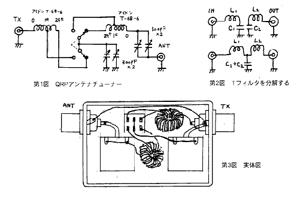

| ・戻る |
移動運用は楽しいものです。 しかし、車で移動するのならいろいろなものを持って行くことも出来ますが、歩いて山に登るようなときは持って行く装
備が成るべく軽いものであって欲しいものです。
ここで紹介するアンテナチューナーはそんなとき便利なもので全重量が110g.という軽い者です。あっ!! そうそう、目方が軽いだけでなく周波数が
3.5MHzから30MHzまでで、インピーダンスが50Ωから150Ωまでをほぼ50Ωにチューンすることが出来るのです。
回路図を第１図に示します。
基本的にはT型フィルタにリアクタンス調整用のバリコンをつけた物と考えてください。
第２図はT型フィルタを2つに分解したところです。 左側は送信機のインピーダンスに同調するL型フィルタです。 そして右側がアンテナのインピーダン
スに同調するL型フィルタです。 2つのL型フィルタを合体させるとT型フィルタになることがお分かりいただけたと思います。

さて、このL型フィルタのCとLの価はどのように算出されるでしょうか。 結論から言うと
XC(XL)= QL*Z
つまり、コンデンサとコイルの価はフィルタのQL と入(出)力インピーダンスZ
の積で決まりますが入力インピーダンスは50Ω、アンテナのインピーダンスはアンテナの個々の価がありますが周波数が一定であればほぼ一定の価を示すこと
になります。
もうお分かりの方もいらっしゃると思いますが、QLの価にそれほどこだわらなければCとLの価は相当自由であることがお分かりいただけますね。
アンテナは純抵抗分だけでなくリアクタンス分が含まれています。 T型フィルタは負荷であるアンテナが純抵抗分だけであれば簡単にT
型フィルタでチューンが可能ですが、リアクタンス分が入ってくるとチューンできなくなる恐れがでてきます。 その場合VC2が有効な素子となるのです。
リアクタンスをキャンセルするにはコンデンサだけでなくコイルが必要になることもありますが、そのときはL2 の一部がその役割を果たします。
以上述べたような考えにもとずいて回路を考えたのが第1図に示したものです。
バリコンは2連の250pFのポリバリをパラにして使っています。 コイルの方はアミドンのT-68-6(黄色)に19回と29回捲きのコイルをスイッチ
で切り替えて使います。
ケースはリアクタンス調整用のバリコンがアースから浮いているため金属ケースは使うことが出来ません。 タカチのSW-75を使い第3図に示すように組
み上げました。
性能としては測定の結果、3.5MHzから30MHzまで24Ωから150Ωまで多少難しい場合もありますがほぼチューニングすることが出来まし た。
使い方
送信機からSWRメータ(#226が最適だと思います)を通して本機、アンテナ(ロングワイヤでも可)とつなぎます。
SWRメータの針がなるべく1.0に近くなるようにスイッチと2つのバリコンを操作します。
ただしこの場合、Qの価とL,Cの価が周波数の変化とともに意外に大きく変化するため、Lの捲き数やバリコンの回し具合に一貫性がほとんど現れません。
始めのうちはかなり操作に戸惑うことがあると思いますが
根気よく訓練してください。
「周波数が低いからコイルの巻数が捲き数の多い方(29回捲き)」という風に固定概念をつけてしまうとチューンできないことがあります。
残念ながら現在、250pF のバリコンが手許になくなってしまいました。キット化はそんなわけで若干おくれる見通しです。 部品類の手持ちのある方の試作報告をお待ちしています。